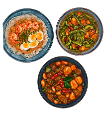
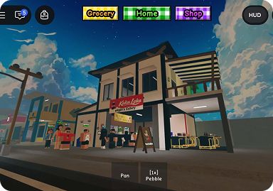
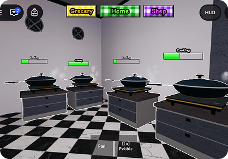
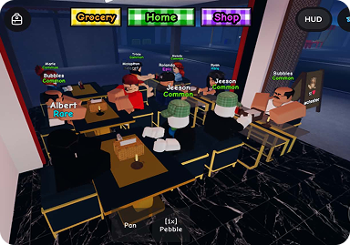

FILIPINO DELICACIES
Cooking up classic Filipino comfort food, loaded with love and rich traditions.
Serve, Laugh, and Build Your 5-Star Dream Eatery!
Feel the heat of your own karinderya. Plate classic Filipino dishes with a little extra for every friend at the table — then run the eatery until the critics have no choice but to pin five stars on the door.
PLAY
Cooking up classic Filipino comfort food, loaded with love and rich traditions.
Team up and cook with your friends.
Earn top reviews from food critics and hungry customers alike by mastering every dish to perfection.
Tingnan ang loob ng Karinderya, mula kusina hanggang sa dining area


